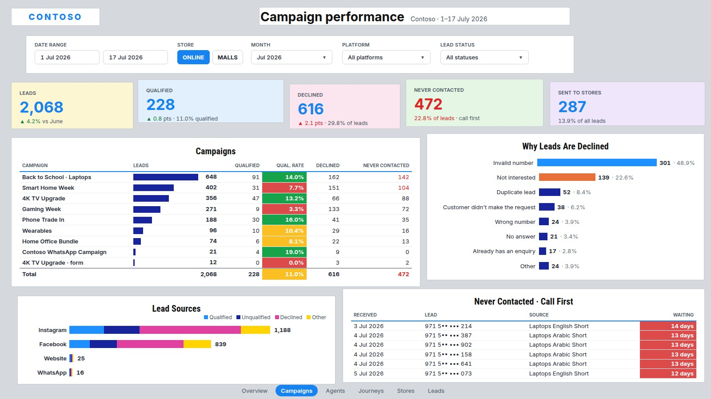
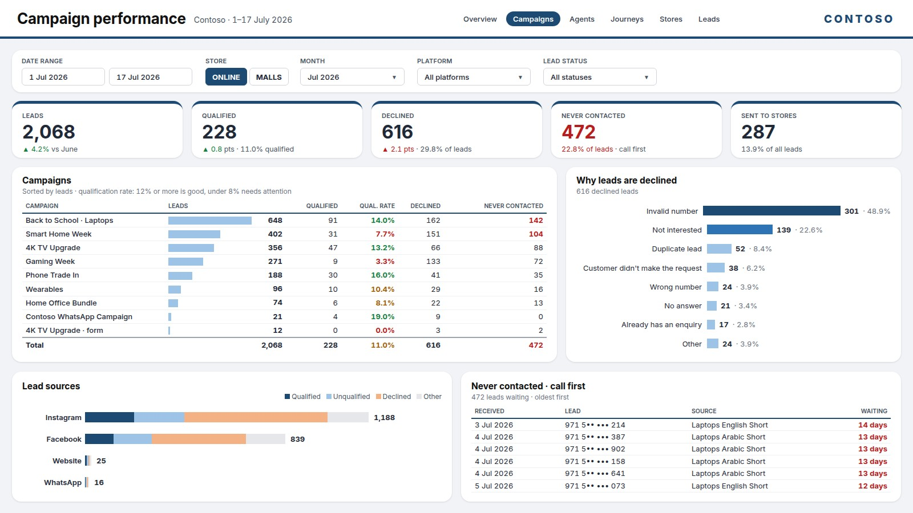

Monday, 8:47. The CEO needs the sales dashboard in the company colours, and the board meeting starts at 9:00. The data is ready. The design is not. Most Power BI reports don't fail because of the numbers. They fail because nobody can read them in the ten seconds a manager gives them.
This is a leads report: campaigns, why leads are declined, where they come from, and who is still waiting for a call. (Contoso is a made-up electronics retailer, and all the numbers are fictional.) Every visual is the right one. The problem is everything around them.

What was wrong
- Too many colours. Blue, orange, pink, yellow and green all compete, so none of them means anything.
- No grid. Cards of different sizes, uneven gaps and panels that almost line up, which makes the page look unfinished.
- No reading order. The title sits in the middle, the logo on the left and the page tabs at the bottom. The eye doesn't know where to start.
- Colour without meaning. Full green, amber and red cells shout at the same volume as the numbers that matter.
What we changed, and why it works
Nothing about the data changed. We kept every visual and changed five design decisions:
- One brand colour, quiet neutrals. Navy for the data, light greys for the rest. When only one colour is strong, it's obvious what to look at.
- KPIs first, in one row of equal cards. The page is read from the top left, so the five numbers a manager asks about come first.
- One grid, the same gap everywhere. Every panel lines up with the ones above and beside it. Nobody notices a good grid; everybody notices a bad one.
- Titles that explain. A short title, and a subtitle under it that says what good looks like, for example "12% or more is good".
- Colour only for status. Green, amber and red appear only as text on the numbers that need attention, like the qualification rate and the days a lead has been waiting.

The same redesign in three steps
We built a free Power BI Theme & Layout Generator for exactly this. This is the setup behind the report above:
- Colours. Pick a preset or your brand colour. The whole theme follows it: eight data colours, text, backgrounds, tables, and good, neutral and bad colours for status. A readability check warns you if text gets hard to read.
- Page size and layout. 1920 × 1080, the Executive summary layout, five KPI cards, a filter strip on top, rounded corners, a KPI accent bar and a header line. The live preview updates with every click.
- Download. Three files: the theme (JSON), a matching background (PNG) and a table with the exact X, Y, width and height of every visual (CSV).
In Power BI
- Import the theme: View › Themes › Browse for themes.
- Set the background: Format page › Canvas background › Image, Image fit Stretch, Transparency 0%.
- Add each visual and type its four numbers from the table into Format › General › Properties. It lands exactly on its panel. Power BI can't import positions, so this is the one manual step, about a minute per page.
The detail that cost us hours: use Stretch
Power BI offers several Image fit options for a background, such as Normal, Fit and Fill. With anything other than Stretch, Power BI scales the image slightly and the panels drift by a few pixels, so your visuals never quite sit on them. We tested it at 1920 × 1080 and at 1280 × 720. With Stretch, every panel lined up exactly.
Arabic reports, one click
Arabic readers start on the right. One click switches the whole layout to right-to-left: the KPIs, the filters and the logo move to the side where Arabic readers start, and the positions table follows.
Same data, same visuals. The difference is that the report now has a reading order, and a manager finds the answer before the meeting starts.